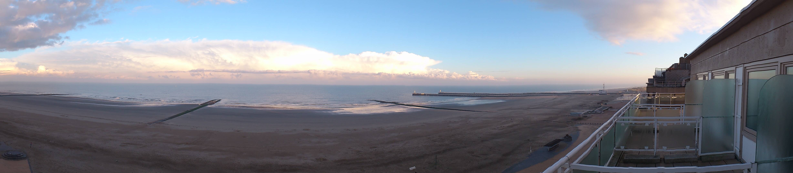
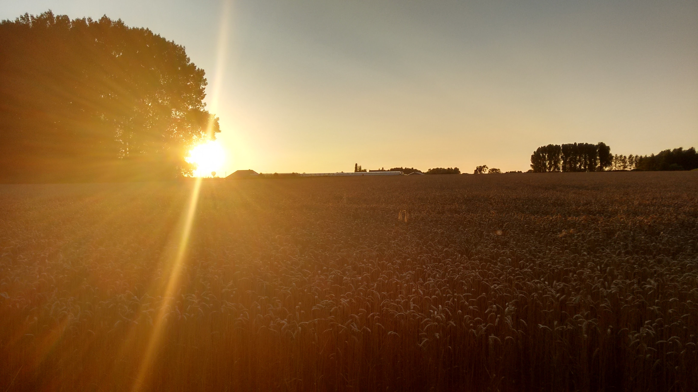
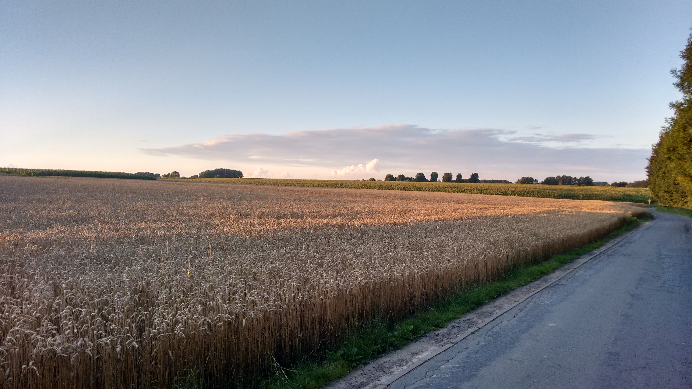
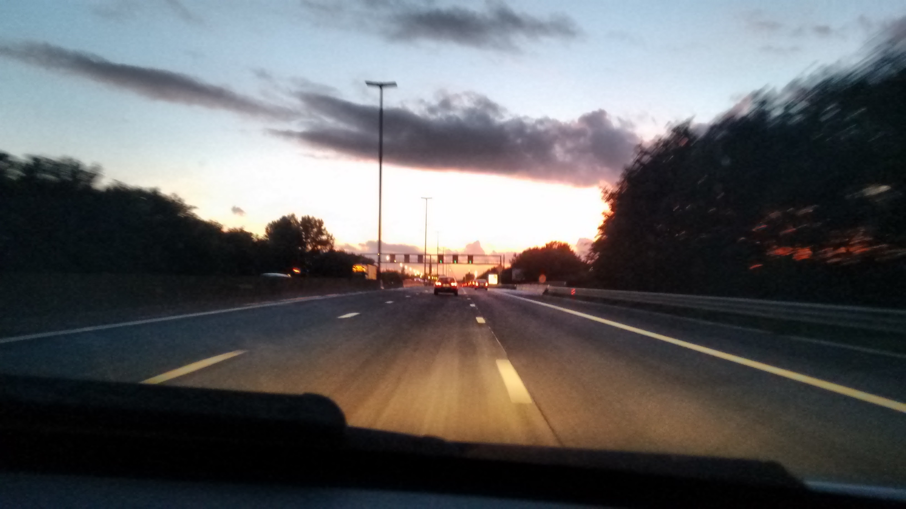
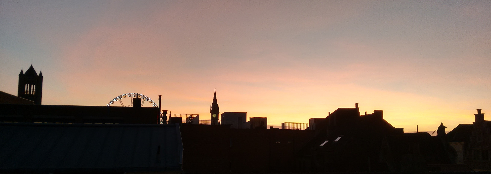
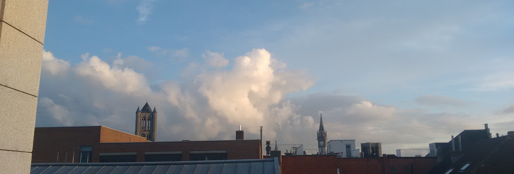
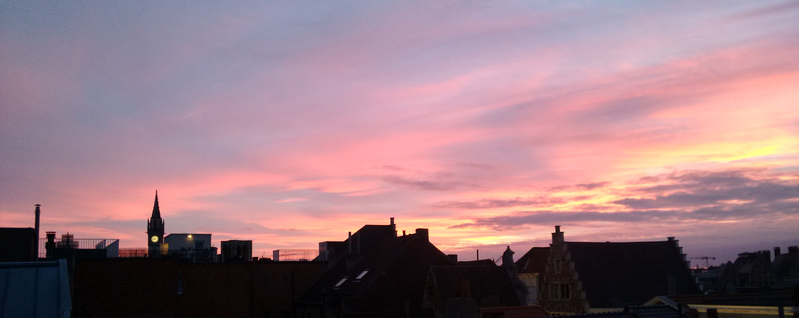
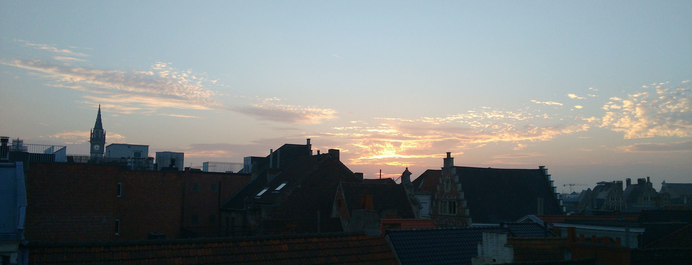
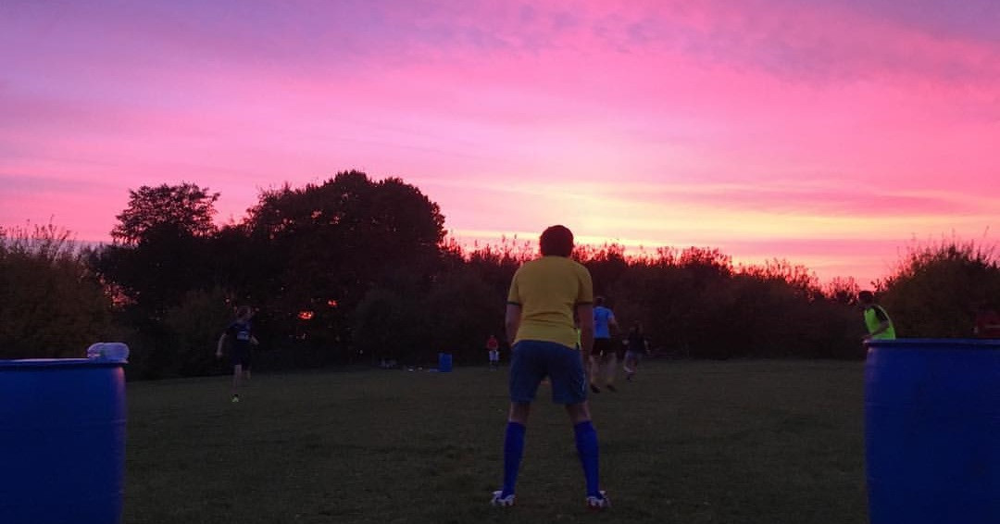

Back to our homepage
Clouds are beautiful and fascinating entities. They come in different colors, different shapes or aren't there at all! Clouds boost creativity, let you dream and make you feel humble. They can actually make your day. True wonders of nature, that bring life, freshness and peace, but also terror, sadness and forgetfulness. Clouds are a medium for symbolism, to materialize whatever needs to be symbolized. In real life too people often look at clouds, for example to daydream or to tell how they feel in a indirect manner. They are the waves of the sky, unrestricted by gravity and in no hurry at all. And above all, they look so freaking fluffy!
Hello morning, door to a new day

In this gorgeous picture, we see a large cloudmass hovering over the Newportian sea. The month is November and a cool breeze rolls over the sandy beach. Because of the early hour and the somewhat special manner of construction on the belgian coast, no sun reaches the beach yet. The clouds in the distance however, are well lit. We can see traces of mellow yellow and pink in the whitish clouds, contrasted by a blue frame: an intense lighter blue above, a relaxing but mysterious grey-blue below.
A tale of two pictures


Two pictures, both taken within seconds of each other. But how different. On the left the sun casts her evening rays, causing a wheatfield to look redbrown. She arcs in the lens of the camera, splitting the picture in two and drawing the eye of the beholder towards herself. The overall feel of this image is that it's accentuating the beauty of the sun. The right side of the duet however, holds a totally different subtlety. Here we see a clear blue sky and yellow wheatfields below, a true image of the colors of Dikkelvenne. However, danger lurks. An army of soldiers with clouded minds approaches from the east. They've come to charge at the sun, and remove her from her daily throne.
Paint it white

Ghent is a lovely city. The clouds above Ghent, they are lovely too. From time to time, these city clouds look like they have been painted by Bob Ross himself. The white used for the clouds in the center of this picture, courtesy of the sun, is among the most white whites I ever saw. It extremely enhances the fluffiness of the clouds, and makes them look like they're about to dissolve in a flash of light.
Triptych of an unclear reality



A road. Cars riding in front of us. Drifting thoughts. I'm hungry. Conversation void of any meaningful content. Still the same cars in front of us. A pink sky in the distance, like we're driving to a better place. Trees flashing by. A car overtaking on the left. He's speeding for sure. We're on a bridge over another road. Lots of cars on the other road. Their lights look nice. I wonder if all those people are also thinking nothing. Their actions feel weird. Almost robotic. But that pink sky in front of us is really nice.
Ferris wheels are really photogenic...

During the Ghent Winterfeesten, a ferris wheel is placed on the Korenmarkt. And I have to say, these wheels are pretty damn photogenic. Okay, during the day they can look a bit dull and grey, somewhat out of place. But as soon as the sun falls behind the horizon, it's money-time for the wheel. Its decorating lights and slow rotational speed are true eyecandy and very calming. But ofcourse we're here to talk about clouds, not ferris wheels! Sadly, there isn't that much to see here when we're talking about clouds. We see some faint red and yellow cloud formations, like a veil around the city. The clouds are more like a nice background to the city buildings than they are beautiful themselves. But that is okay too, they can't always be in the spotlight. According to the clock on the former post office this picture was taken at 5:05pm (coincidentally an Arctic Monkeys song that is a pretty good fit for this picture).
Turmoil over Saint-Nicholas

Trouble is brewing above the church of Saint-Nicholas. From the left unrest flows slowly into the picture, as if some angry overlord is rallying his troops for a first charge. Especially the white cloud in the center that reminisces of "The Great Wave Off Kanagawa" by Hokusai (with the exception that Ghent has no Mt. Fuji ofcourse) looks very powerful and dangerous. It seems ready to come down with full force onto the tower of the former post office.
The sun acting as an atomic explosion

Schism

So alike, yet so divided. So close, yet so hostile. The clouds are readying themselves to clash with eachother. That's what it looks like at least. It's horrible when something like this occurs. On this droopy day, the clouds are very extreme. Although they have exactly the same color, two fronts seem to have formed. Agreed, some clouds are trying to fill the great divide, but obviously to no avail. We probably will never know what caused the clouds to be so divided, but it was the precursor of a sad day.
What a wonderful world

Aeroplanes racing through the sky

Birth of some elements

Desintegration of a phoenix

"Eos was here"

Have you ever seen a sky this pink, as if Eos herself touched the clouds with her fingers? A group of cool animals has the privilege of running behind a ball in this wonderous setting. They seem well-trained, but not fully aware of the beauty of their surroundings. One group of animals won in running behind the ball, most likely because of a more efficient scoring algorithm. This picture was made by the nephew of Daedalos, yet another Greek person: Perdix.
Cat contemplating about life, mice and the weather

Cats are mysterious creatures. One moment they are parkouring all over the place with no regards for their own safety or life and right after that they can be seen looking at the clouds, wondering about life and other trifles. One could say they have almost humanlike behavior. This particular cat, called Rik, seems to be studying the clouds that are passing by. You can only speculate what he's thinking of. I would say catching mice and pigeons and especially about that horrendous giant pigeon that can't fly that always seems to be around him lately. This picture was made by a little bird with the name Vink. In the center of the picture, on the back of the cat, we can see what I presume is an artifact of the process of turning the analog on-tape picture into a digital one. In other words: something (probably dust) is stuck in the analog to digital converter.